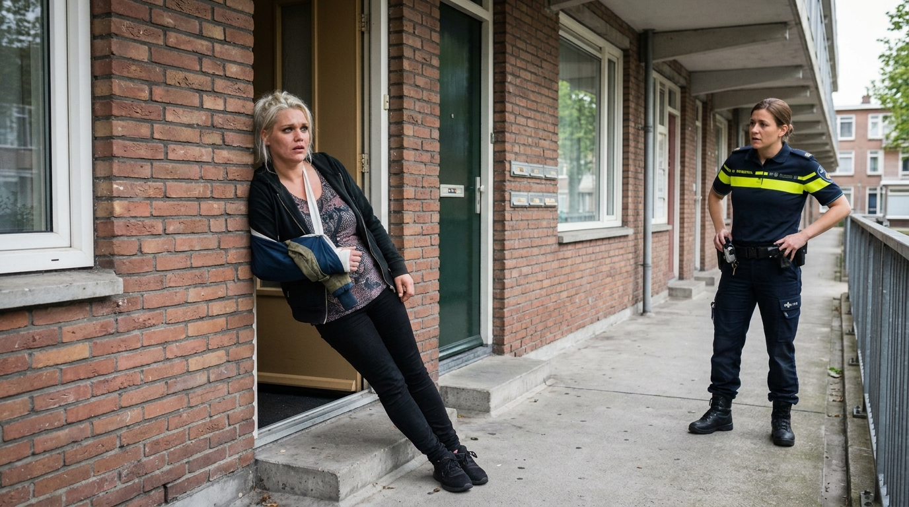

PROCES-VERBAAL VAN AANGIFTE - LES 5
JOUW SCORE: 0 PUNTEN
Fase 3: Binnenkort
Fase 4: Pac-Man (Binnenkort)
STAPPENPLAN VERHOOR & AANGIFTE
- Verhoor Priscilla: Voer links het gesprek met aangeefster Priscilla de Vries. Zij is in paniek en geeft niet alles zomaar prijs. Vraag gericht door op alle 7 W's (inclusief waarmee precies en de exacte handpositie), de route en het kale, veranderlijke maar ordelijke decor, én het volledige signalement van de verdachte.
- Rapportage: Stel rechts tijdens of na het gesprek het proces-verbaal op. Focus op de feitelijke omschrijving, het decor, het signalement en de functionele beperkingen van het slachtoffer.
- Inleveren: Klik op PV Definitief Inleveren om je uitwerking in de livefeed te plaatsen en door te gaan naar Fase 2.

AANGEEFSTER: PRISCILLA DE VRIES (34)
VERHOORKAMER 2
Gesprek met Priscilla
Priscilla is aan het praten...
FASE 2: STIJLFOUTEN VERBETEREN
Noteer de correcte zin.
Hieronder staan 25 zinnen uit de politiepraktijk met een stijlfout. Herschrijf elke zin foutloos in zakelijk, correct Nederlands.
- Alle 25 zinnen moeten ingevuld zijn voordat je op Nakijken kunt klikken.
- Elke zin die in één keer goed is levert 2 punten op (max. 50 punten).
- Bij fouten zie je wat er fout is (nog niet het antwoord) en mag je de zin verbeteren voor 1 extra punt per verbeterde zin.

FASE 2: STIJL & FORMULEREN
25 ZINNEN
Ingevuld: 0 / 25 zinnen
Vul alle 25 zinnen in om te kunnen nakijken.
VOORTGANG & SCORES PER KLAS (REAL-TIME)
| Student | Klas | Fase 1 (PV Aangifte) | Fase 2 (25 Zinnen) | Score Fase 2 | Totaalscore |
|---|---|---|---|---|---|
| Scores laden uit database... | |||||
LIVEFEED AANGIFTES
Verbinding maken met database...